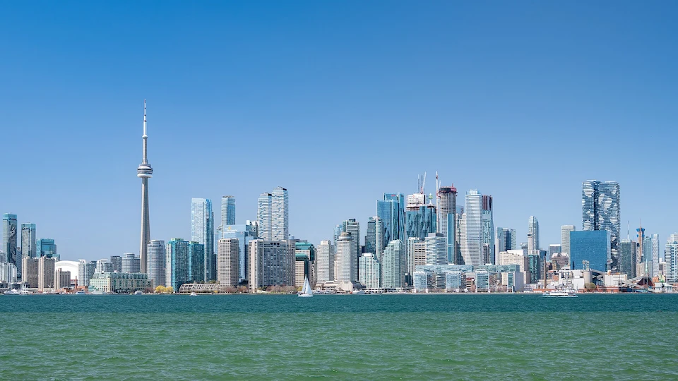

Toronto is my favorite city because it inspires me with its unique energy and multicultural spirit. Here I can enjoy flavors, traditions, and people from all over the world in one place, making it both vibrant and welcoming. I love how it combines the modern beauty of its skyscrapers with the calm of Lake Ontario and its parks, creating a perfect balance between urban life and nature. All of this makes Toronto be the best for me.
Toronto is also very special to me because it has a strong community of Latter-day Saints. I love that there are many activities and opportunities to grow spiritually while connecting with others who share my faith. The temple is also very close and unique, making it a place where I can feel peace and strength every time I visit.
